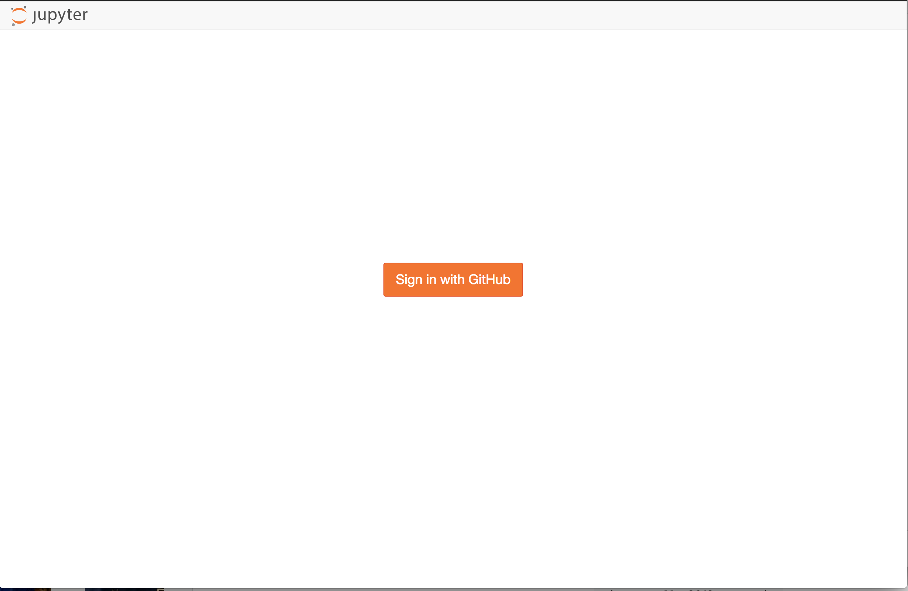
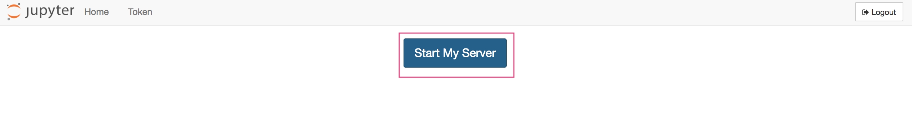
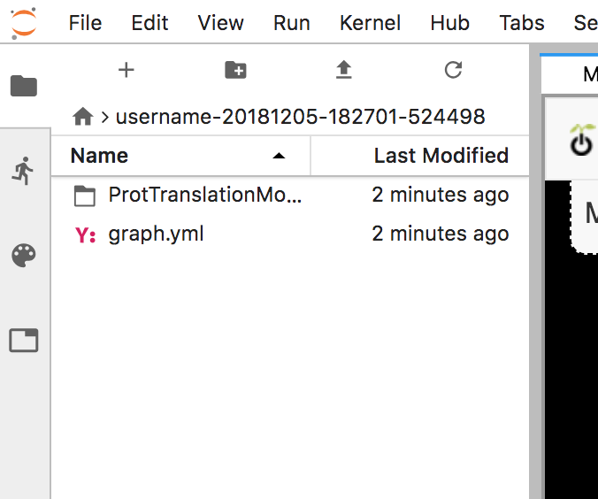

Getting started¶
The Crops in silico model composer is based on the popular JupyterLab
web-based interactive analysis and development environment. JupyterLab
provides a complete development environment for the creation and execution
of models using the cis_interface integration framework. The model
composer is a JupyterLab plugin that supports a visual-programming approach
to model composition.
Logging in¶
To access the web service, go to https://cropsinsilico.ndslabs.org. The CiS model composer uses GitHub for authentication. You will be prompted to sign-in via GitHub and to authorize CiS to access information about you. username.
Click on the “Sign in with GitHub” button: 
Enter your GitHub credentials or create an account, if necessary:

If prompted, authorize “Crops in silico” to access your profile information:

Starting JupyterLab¶
Once logged in, you will be able to start your JupyterLab instance. Select “Start My Server”:

Launching the Model Composer¶
Once started, you will see the JupyterLab launcher. This JupyterLab environment
is a complete development environment for use with the cis_interface
framework. You can create notebooks, execute commands from the terminal, or
launch the model composer. Select the “Model Composer” icon:

Loading an Existing Model Graph¶
The model composer allows to to create and use models from the model library to
compose execution graphs. Select the “Load” button to load the “GrCM” model:
and

Executing the Graph¶
Select “Execute” to run the model. Model output will be displayed on screen and
written to an model output directory for further exploration:

Viewing Execution Output¶
The model output directory contains the graph, model source, inputs and outputs used during execution:

Using the Model Library¶
The model library lists all official models approved by the community as well as any private models you have developed and added to the system. You can use the library to compose new graphs using this user interface:

Next step¶
For more detailed usage information, please see the User Guide.